Un clic hace todo el trabajo
Otros programas se detienen en el apilado o le dan una caja de herramientas para terminar la imagen usted mismo. En OriginStack el apilado es la mitad del camino: los pasos de acabado de abajo se ejecutan en el mismo clic, en este orden, ajustados al tipo de objeto que reconoció. Cada uno se puede desactivar, y también se guarda el apilado lineal para quien quiera terminarlo en otro programa.
Color a partir de las estrellas
Las estrellas de su imagen se cruzan con el catálogo Gaia y los colores se ajustan según sus colores conocidos, de modo que una estrella como el Sol sale blanca. Sin balance de blancos manual.
Adiós a los gradientes
La contaminación lumínica, la luz de la Luna y el viñeteado dejan una pendiente de brillo a lo largo de la imagen. Se ajusta un modelo de fondo al cielo alrededor del objeto y se resta.
Un cielo limpio y neutro
Se limpian los píxeles calientes que quedan y el moteado de color, y el cielo queda en un negro uniforme y neutro en vez de teñido.
Menos ruido, el detalle se conserva
Un reductor de ruido por wavelets que protege filamentos y brazos espirales. En sesiones del Origin, una pequeña red neuronal entrenada con sesiones reales del Origin corrige el desenfoque del seeing y elimina el ruido en un solo paso.
Estrellas más pequeñas, más estructura
Las estrellas se reducen sin perder su color, para que no tapen el objeto, y el detalle de escala media del objeto se realza frente al ruido.
Estirada y lista para compartir
Un estirado que realza la luz débil sin quemar los núcleos brillantes le da el JPEG terminado. En la aplicación puede probar después otro de diez estirados sin volver a procesar.
Lo que ocurre antes con cada toma, y las ideas detrás de cada paso, están en cómo funciona. La comparación con Siril, DeepSkyStacker, PixInsight, Astro Pixel Processor y el apilado propio del Origin está en su propia página, y diez sesiones se muestran junto al apilado del propio Origin.
Una noche de tomas en aproximadamente un minuto
La nebulosa Omega, 114 tomas, en un portátil de 8 núcleos: 62 segundos desde los archivos en bruto hasta la imagen terminada, frente a 89 a principios de octubre. El bloque rojo es la parte que hace que la imagen se vea bien; el resto es conseguir que 114 tomas encajen.
- Cargar, calibrar, puntuar13.7 s
- Registrar1.6 s
- Alinear y apilar22.0 s
- Acabar la imagen18.1 s
- Disco y preparación6.3 s
Cargar, calibrar, puntuar
Cada toma se corrige con tus bias, darks y flats, se convierte del mosaico de color del sensor en una imagen y se puntúa por nitidez y ruido. Las tomas claramente malas se descartan.
Registrar
Las tomas se alinean con precisión de una fracción de píxel, incluida la lenta rotación de campo que produce una montura altacimutal como la del Origin.
Alinear y apilar
Las tomas alineadas se combinan con rechazo de valores atípicos, de modo que las trazas de satélites, los píxeles calientes y los rayos cósmicos desaparecen en lugar de promediarse.
Acabar la imagen
Se tratan los gradientes de fondo, el color y el ruido, y luego el resultado se estira para poder verlo. El archivo FITS que guarda sigue siendo lineal, listo para cualquier trabajo posterior.
Las tomas se procesan de una en una, así que 500 tomas necesitan más o menos la misma memoria que 50. Los archivos temporales ocupan unos 100 MB de disco por toma mientras dura la ejecución; las tomas alineadas se guardan en memoria cuando hay espacio, dejando siempre libre una quinta parte de ella.
Por qué es rápido. Más de 80 de los pasos más pesados son Rust compilado, no Python: la combinación de apilado por defecto es unas 37 veces más rápida que el código NumPy al que sustituyó, la reparación de píxeles calientes de 25 a 55 veces y el ajuste del fondo unas 31 veces. La mayoría dan exactamente los mismos números que antes. El procesado de las tomas está organizado según cómo se comporta realmente una CPU, un proceso por núcleo en tres cuartas partes de los núcleos, y varias noches de un mismo objeto se terminan una sola vez en lugar de una por noche: siete sesiones de la Nebulosa de Orión pasaron de 15 a unos 8 minutos.
Míralo trabajar o sáltate los ajustes
Indica a la aplicación una carpeta de tomas, di qué has fotografiado (o deja que lo averigüe) y pulsa Iniciar. Cada ajuste tiene una explicación de una línea, y los valores predeterminados eligen el resto según tu objeto. Estas son pantallas reales del apilado de las tomas de la galaxia del Girasol usadas en las comparativas de más abajo. ¿Es la primera vez que procesas imágenes del Celestron Origin? La guía paso a paso parte de la carpeta de sesión que guarda el telescopio.
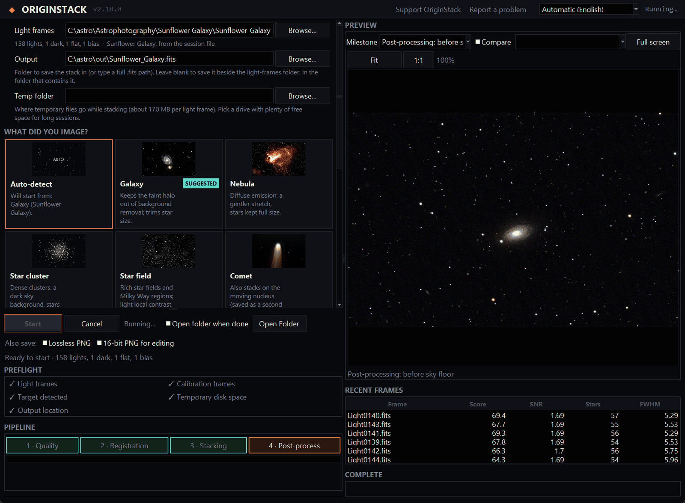

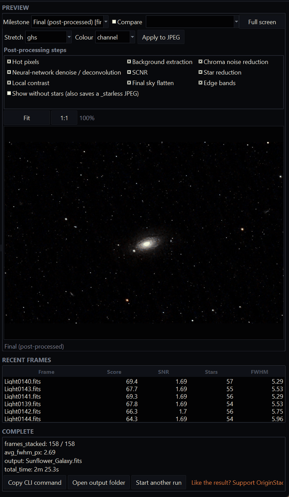
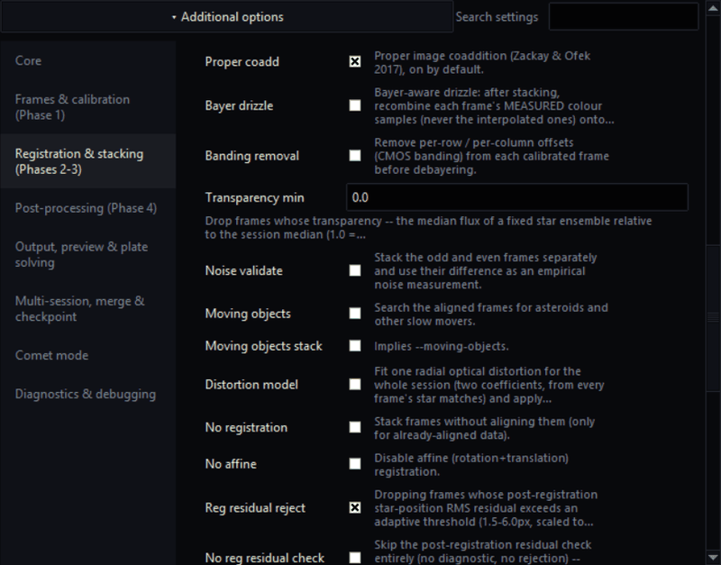
Cómo se compara
Lo que da una sola ejecución, a partir de las tomas que guarda el Origin. La tabla completa, con Astro Pixel Processor y notas sobre cada programa, está en la página de comparación.
| OriginStack | Siril | DeepSkyStacker | PixInsight | App del Origin | |
|---|---|---|---|---|---|
| De tomas en bruto a imagen terminada en una sola ejecución | Sí, con un clic | Apilado por script, acabado paso a paso | Apilado y niveles básicos | Apilado automatizado, acabado paso a paso | Sí, en el telescopio |
| Gradientes, color con Gaia, ruido, estrellas, estirado | Todo automático, ajustado a cada objeto | Herramientas aparte | No incluido | Procesos aparte, algunos complementos de pago | Eliminación de gradientes; el resto no se indica |
| Tamaño de las estrellas con las mismas tomas (OriginStack = 1,00; menor es más nítido) | 1.00 | 1,01 a 1,13 | 1.09 | No medido | 1,04 a 1,36 |
| Precio | Gratis, código abierto | Gratis, código abierto | Gratis, código abierto | Licencia de pago | Incluida con el telescopio |
Medido frente a Siril y DeepSkyStacker
Las mismas tomas, los mismos bias, darks y flats, un mismo equipo, cada herramienta con ajustes de tipo predeterminado. Tres sesiones del Celestron Origin: la nebulosa Omega (114 × 30 s), la galaxia del Girasol (158 × 20 s) y la galaxia del Escultor (532 × 10 s).
| Sesión | Solo apilado | OriginStack, imagen terminada | Memoria máxima | Anchura de las estrellas |
|---|---|---|---|---|
| Omega, 114 tomas | 44 s / 54 s | 62 s | 12.0 / 6.5 GB | 4.42 / 4.56 px |
| Girasol, 158 tomas | 54 s / 67 s | 81 s | 14.3 / 8.9 GB | 3.51 / 3.60 px |
| Escultor, 532 tomas | 128 s / 159 s | 144 s | 9.1 / 11.2 GB | 2.66 / 3.01 px |
Anchura de las estrellas sobre las mismas estrellas (menor es más nítido)
Omega
Girasol
Escultor
Qué dicen los números
Nitidez: más nítido que Siril en las tres. Sobre las mismas estrellas, OriginStack es un 3% más estrecho en Omega (4.42 frente a 4.56 px), un 2% en el Girasol y un 10% en el Escultor. Dos cambios lo hicieron posible: la coadición óptima de imágenes, activada por defecto, que pondera cada escala de detalle según la nitidez, la transparencia y el ruido de cada toma (Zackay & Ofek, 2017); y la corrección de un paso de píxeles calientes que aplanaba el pico de la mayoría de las estrellas brillantes en cada toma — en estrellas submuestreadas, el centro de una estrella se parece exactamente a un píxel caliente para una prueba que solo compara un píxel con sus vecinos. Además usó más tomas: 114, 158 y 532, frente a las 111, 157 y 525 de Siril.
Ruido: menos ruido que Siril una vez igualada la nitidez. Un apilado más nítido tiene más ruido por píxel, así que la comparación justa desenfoca cada canal de OriginStack hasta que sus estrellas son exactamente tan anchas como las de Siril. Entonces su ruido, rojo/verde/azul, es 0.80, 0.86, 0.88 veces el de Siril en Omega, 0.84, 0.66, 0.93 en el Girasol (sus estrellas en rojo ya eran tan anchas como las de Siril) y 0.82, 0.72, 0.89 en el Escultor. Sin igualar, por píxel, es 0.92, 1.02, 1.05; 0.84, 0.73, 0.97; y 0.98, 0.85, 1.28 — cuanto más nítidas las estrellas, más alto ese número.
Velocidad: más rápido que Siril en las tres. Hasta el apilado, ejecutados uno tras otro en el mismo equipo: 44 s frente a los 54 s de Siril en Omega, 54 frente a 67 s en el Girasol y 128 frente a 159 s en el Escultor. OriginStack sigue haciendo trabajo por toma que Siril no hace — puntuación de calidad, balance de blancos y detección de estrellas en cada toma — y lo recupera en el registro y el apilado. Los tiempos de ambas herramientas variaron hasta un tercio entre ejecuciones idénticas a lo largo del día (Siril solo tardó entre 55 y 86 s en Omega), así que compara dentro de cada fila. La imagen terminada cuesta otros 16 a 27 s.
Memoria y disco. OriginStack mantiene las tomas alineadas en memoria cuando hay espacio, como en las dos sesiones más cortas: 12.0 y 14.3 GB, frente a 6.5 y 8.9 de Siril. En el Escultor van a archivos temporales y usa 9.1 GB frente a 11.2 de Siril. El disco temporal es menor en las dos sesiones más cortas (11 y 15 GB frente a 19 y 23 GB) y mayor en el Escultor (63 frente a 57 GB).
DeepSkyStacker tardó 14 min 8 s en Omega, produjo estrellas más suaves que los otros dos y, con sus ajustes predeterminados, dejó rastros de píxeles calientes y algunas tomas mal registradas.
El punto fuerte de OriginStack es lo que viene después del apilado: termina la imagen en la misma ejecución sin preparación, explica la noche con diagnósticos, resuelve la posición en el cielo en tu propio ordenador, funciona totalmente sin conexión si lo pides y hace el resto que las otras herramientas te dejan a ti. En un apilado simple ahora es más nítido que Siril en las tres sesiones, tiene menos ruido una vez igualada la nitidez y es más rápido en las tres. Las tres sesiones se volvieron a medir el 2026-10-02 con esta versión; la cifra de DeepSkyStacker es de una ejecución anterior y no se repitió. Estas cifras ya se han corregido antes: una versión anterior de esta página exageraba la nitidez por la forma en que se elegían las estrellas para medir, y otra atribuía una mejora de ruido a la detección de rayos cósmicos que en realidad era suavizado. Tres sesiones de una sola cámara son una muestra pequeña, y ambas herramientas se dejaron con ajustes de tipo predeterminado. tools/bench_vs_siril.py repite todo esto con tus propias tomas.
Y frente al apilado del propio telescopio
Cada carpeta de sesión del Celestron Origin contiene también el resultado del propio telescopio, FinalStackedMaster.tiff. Cuatro sesiones, las mismas tomas de luz para los tres: la galaxia del Ojo Negro (81 × 20 s), la galaxia del Girasol (158 × 20 s), la nebulosa del Cangrejo (133 tomas) y el cúmulo de Hércules (56 tomas). OriginStack con sus valores predeterminados, Siril con los ajustes de arriba.
| Sesión | frente a Origin: anchura de las estrellas | frente a Origin: ruido | frente a Siril: anchura de las estrellas | frente a Siril: ruido |
|---|---|---|---|---|
| Ojo Negro, 81 tomas | 8.15 / 8.38 px | 1.00 / 1.04 / 1.06 | 8.21 / 8.26 px | 0.94 / 1.09 / 0.97 |
| Girasol, 158 tomas | 3.54 / 4.25 px | 0.96 / 0.93 / 0.95 | 3.50 / 3.58 px | 1.02 / 1.03 / 1.02 |
| Cangrejo, 133 tomas | 2.54 / 3.50 px | 1.00 / 0.92 / 0.95 | 2.54 / 2.77 px | 1.04 / 0.99 / 1.01 |
| Hércules, 56 tomas | 5.67 / 5.98 px | 0.99 / 0.96 / 1.01 | 5.68 / 5.74 px | 1.00 / 1.04 / 1.01 |
Anchura de las estrellas respecto a la de OriginStack, sobre las mismas estrellas (menor es más nítido)
Galaxia del Ojo Negro
Galaxia del Girasol
Nebulosa del Cangrejo
Cúmulo de Hércules
Qué dicen los números
Nitidez: el mismo orden en todas las sesiones. OriginStack, luego Siril, luego el Origin. El apilado del propio telescopio es el más suave de los tres: sus estrellas son un 4% más anchas que las de OriginStack en el Ojo Negro, un 17% en el Girasol, un 27% en el Cangrejo y un 5% en el cúmulo de Hércules, y la mayor parte está en el azul. Siril queda cerca de OriginStack, entre un 1 y un 8% más ancho.
Ruido: empate. Medido a la escala de una estrella — el ruido que decide lo débil que puede ser una estrella visible — los tres están a pocos puntos porcentuales entre sí en todos los canales. La nitidez extra de OriginStack no cuesta nada en ruido.
Lo que el Origin hace mejor de serie: su imagen guardada ya tiene eliminados los gradientes del cielo. OriginStack los elimina en sus pasos de acabado; el apilado de Siril aquí no tiene ninguno.
Encontró dos fallos en OriginStack. Al poner las imágenes terminadas una junto a otra se vieron un cielo moteado en objetos pequeños y débiles y discos azules en las estrellas saturadas. Ambos están corregidos, y las cifras de arriba se volvieron a medir después.
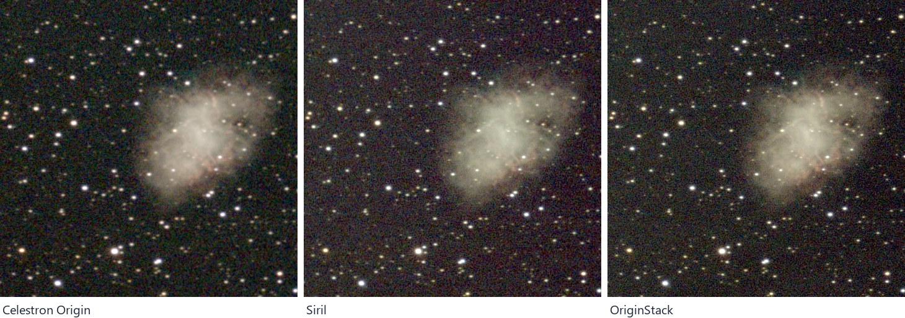
Cómo se midió: el TIFF del Origin es lineal pero está sobre un pedestal grande, así que los núcleos de sus estrellas más brillantes se recortan; cada apilado se llevó a la escala de brillo de OriginStack con una ganancia por canal de color, medida donde la imagen es lineal, y se dejaron fuera las estrellas recortadas. Las relaciones de ruido dependen de esa ganancia, así que tómalas con un margen de más o menos un 5 a 10%. Cuatro sesiones de un solo telescopio son una muestra pequeña. tools/bench_vs_origin.py lo repite con tus propias tomas.
Hecho con OriginStack
Todo a partir de tomas en bruto del Celestron Origin, apiladas y procesadas con OriginStack, bajo cielos medidos de Bortle 7-9 (fuerte contaminación lumínica, jardín/azotea, no un lugar oscuro) -- consulta el README para ver las mediciones de cada imagen y el método.
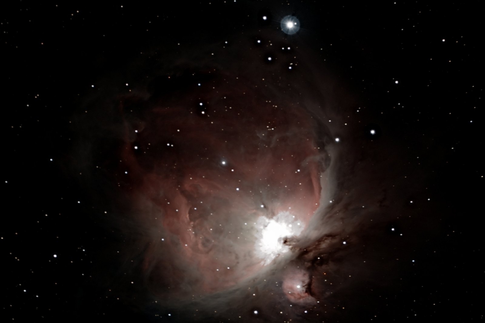
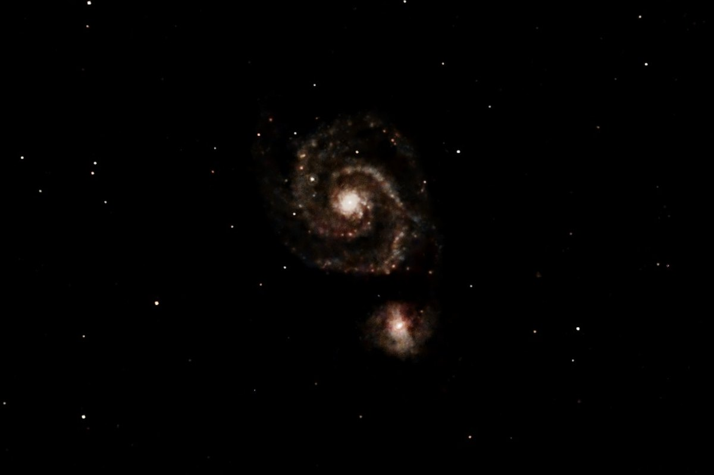
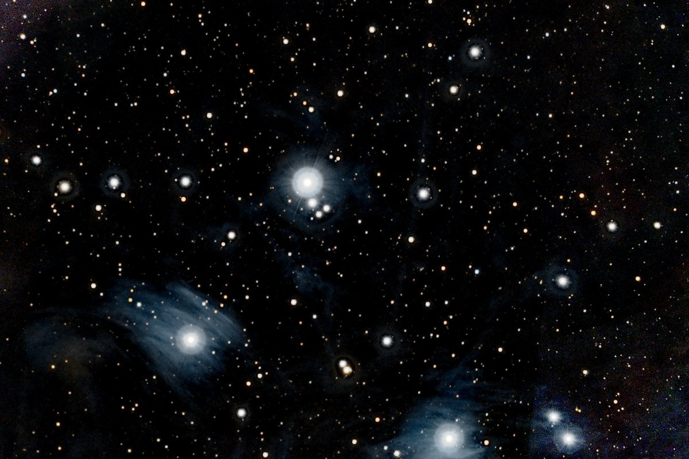
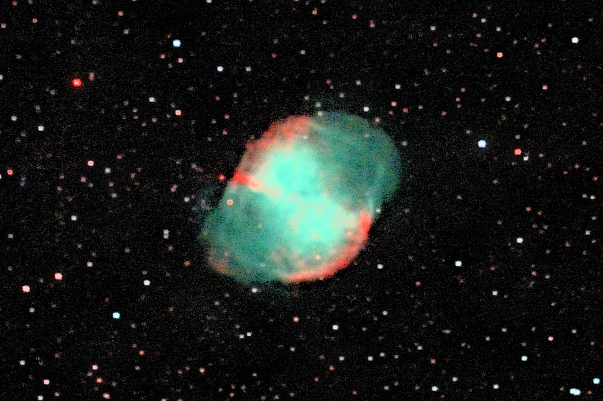
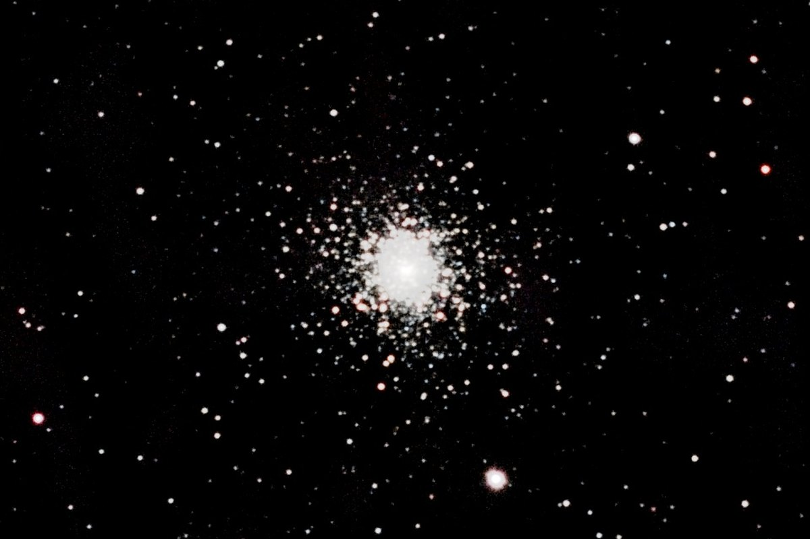
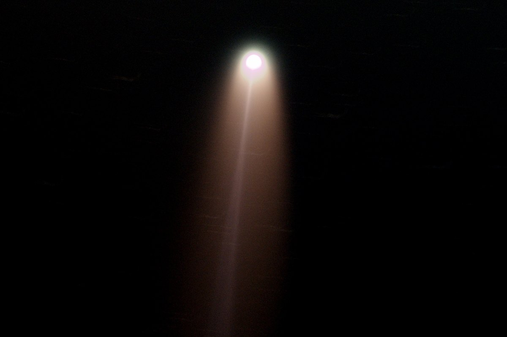
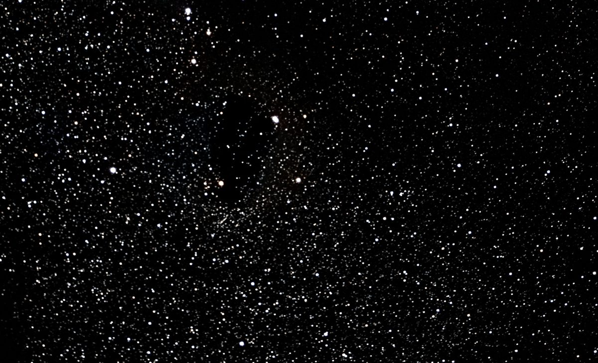
Una imagen de cada tipo de objetivo para el que OriginStack tiene un ajuste, cada una apilada con todas las noches disponibles. Más en la galería.
Instalación
?No sabe qu? descarga es la adecuada? Elija abajo su sistema y experiencia.
El instalador de Windows es la forma m?s sencilla de comenzar.
Instalador para Windows
Software de apilado gratuito para Windows 10 y 11. Descarga el archivo de instalación de la última versión y ejecútalo. Se instala solo para tu usuario, añade una entrada en el menú Inicio y un desinstalador, y no necesita Python.
¿Prefiere no instalar nada? El exe portátil es un único archivo que puede ejecutar desde cualquier carpeta o desde una memoria USB. Se descomprime cada vez que se inicia, por lo que tarda unos segundos más en abrirse que la aplicación instalada.
¿Prefieres el zip? Usa primero Extraer todo y luego ejecuta OriginStack.exe desde la carpeta extraída. Ejecutarlo desde dentro del zip no funciona.
Aplicación para macOS
Descarga el zip para tu Mac de la última versión: macos-arm64 para Apple silicon (M1 y posteriores, requiere macOS 14 o posterior) o macos-x86_64 para un Mac con Intel. Abre el zip y arrastra OriginStack a Aplicaciones. No necesita Python.
La aplicación aún no está firmada por Apple, así que macOS bloquea el primer inicio. Haz Control-clic en OriginStack y elige Abrir, y luego Abrir otra vez; en macOS 15 y posteriores, intenta abrirla una vez y luego elige Abrir igualmente en Ajustes del Sistema, Privacidad y seguridad. O borra la marca de descarga en Terminal:
xattr -dr com.apple.quarantine /Applications/OriginStack.app
Las versiones para Mac se han usado menos en la práctica que la versión para Windows.
Paquete para Linux
Descarga OriginStack-<version>-linux-x64.tar.gz de la última versión, descomprímelo y ejecuta el instalador. Se instala solo para tu usuario, añade una entrada en el menú de aplicaciones y no necesita Python ni root.
tar xzf OriginStack-*-linux-x64.tar.gz cd OriginStack-*-linux-x64 ./install.sh
Requiere glibc 2.35 o posterior (Ubuntu 22.04, Debian 12, Fedora 36 y posteriores) y se ha usado menos en la práctica que la versión para Windows. Ejecuta ./install.sh --uninstall para eliminarlo.
Desde el código fuente
En Windows, Linux (probado) o macOS (no probado):
git clone https://github.com/hd152/originstack cd originstack pip install -r requirements.txt python desktop_app.py
La línea de comandos hace el mismo trabajo: python originstack.py -d lights/ -o stacked.fits. Una extensión opcional en Rust acelera los pasos pesados y, si no está, se recurre a NumPy sin más.
Qué más hace
Calibración con bias, darks y flats, eliminación de píxeles calientes y trazas de satélites, sigma clip y otros métodos de apilado con rechazo de valores atípicos, drizzle opcional, eliminación del fondo y de gradientes, reducción de ruido y deconvolución, resolución astrométrica, calibración de color, fotometría y un modo cometa. Si buscas una alternativa gratuita a DeepSkyStacker o Siril para datos de astrofotografía del Celestron Origin y de otras cámaras a color de un solo disparo, está hecho para eso.
Las noches de un mismo objeto se suman: cinco noches de la galaxia del Remolino, combinadas, tenían un 30 % menos de ruido de cielo y estrellas un 12 % más finas que la mejor de ellas sola. Añade más noches con --merge sin guardar los fotogramas antiguos. Cómo funciona.
Qué formatos lee
Archivos en bruto del Celestron Origin (las tomas FITS de cada carpeta de sesión, con su info.json), y tomas de cámaras a color en FITS, RAW de cámara (Canon, Nikon, Sony y otras, requiere rawpy), TIFF y XISF. Se admite vídeo SER para trabajo planetario. Puedes mezclar formatos libremente en una carpeta.
¿Lo quieres totalmente sin conexión? Usa --offline, o márcalo en la aplicación, y OriginStack no hará ninguna petición de red.
Sin IA generativa, nada en la nube
OriginStack nunca envía sus imágenes a un servicio de IA y nunca genera ni inventa contenido de imagen. Su procesamiento es tratamiento de señal clásico y documentado, escrito para este proyecto, desde la calibración y la alineación hasta la eliminación del fondo y la reducción de ruido, y puede leerlo todo en el código fuente. No necesita otro software de astronomía, ni cuenta, ni servicio en la nube, solo bibliotecas científicas de código abierto habituales.
Dos pasos opcionales, --denoiser nn y --deconvolve nn, usan pequeñas redes neuronales entrenadas con sesiones reales del Celestron Origin (la segunda, también con imágenes de sondeos más nítidas del mismo cielo). Se ejecutan en su propio ordenador y se comprobaron con apilados independientes para confirmar que no añaden estrellas ni detalles que no estén en los datos. Los ajustes automáticos usan el segundo para las sesiones del Origin; --deconvolve off lo desactiva. Cómo funcionan.